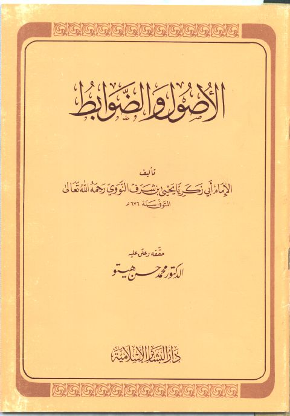

Downloads need an internet connection.
الأصول والضوابط
Authors: يحيى بن شرف النووي
Editors: محمد حسن هيتو
Publishers: دار البشائر الإسلامية
**▫️ العنوان: الأصول والضوابط** ▪️ المؤلف: #يحيى_بن_شرف_النووي ▫️ المحقق: #محمد_حسن_هيتو ▪️ الناشر: #دار_البشائر_الإسلامية ▫️ تاريخ النشر: 1406هــ 1986 م ▪️ بلد النشر: بيروت، #لبنان ▫️ الطبعة: 1 ▪️ عدد الأجزاء: 1 ▫️ الصفحات: 48 ▪️ نوع الوعاء: #كتاب ▫️ التصنيف الرئيسي: #الفقه_وأصوله ▪️ التصنيف الفرعي: #القواعد_الفقهية ۪